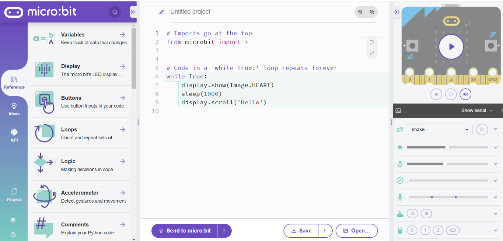
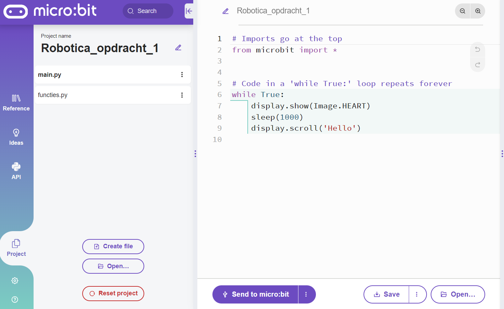

Hoofdstuk 1: Beginnen met programmeren#
In dit hoofdstuk behandelen we hoe je kunt beginnen met programmeren. Hiervoor maken we gebruik van een simulator. Allereerst leren we het programma kennen waarmee we in deze module gaan werken. Vervolgens bespreken we het geven van commando’s via het maken van pseudocode. Hierna kijken we naar de basissyntax van de programmeertaal Python en je leert hoe je een programma overzichtelijk en begrijpelijk kunt houden.
Beginnen met programmeren#
Voor het aansturen van de robot maken we gebruik van de micro:bit Python Editor. Om te beginnen ga je naar deze website. Je krijgt nu het volgende scherm: 
De projecten die je maakt geef je een eigen naam. Hiervoor klik je op
“project”. Hier kun je de projectnaam wijzigen. Een project kan bestaan uit
meerdere bestanden, in veel gevallen is dit een bestand met functies,
bijvoorbeeld functies.py, en een hoofdbestand main.py waarin de functies
worden aangeroepen. In latere hoofdstukken gaan we dieper in op wat functies
zijn.

Pseudocode#
Voordat je echt gaat programmeren is het belangrijk om te bedenken hoe je de robot iets moet laten doen. Het is daarom belangrijk dat je in stapjes opschrijft wat er precies moet gebeuren en hoe het precies moet gebeuren. De uitgeschreven stappen wordt ook wel pseudocode genoemd.
Stel je wilt een programma schrijven om een beker melk in te schenken. Dan wordt de pseudocode:
Pak een beker
Pak het pak melk
Doe de melk in de beker
Dit is nu een programma, maar de robot zou hier nog niks van snappen. De stappen kunnen nog specifieker uitgewerkt worden:
Pak een beker
1a. Doe de kastdeur open
1b. Pak de beker
1c. Doe de kastdeur dicht
Pak het pak melk
2a. Doe de koelkast open
2b. Pak het pak melk
2c. Doe de koelkast dicht
Doe de melk in de beker
3a. Draai de dop van het pak melk
3b. Schenk de melk in de beker
3c. Draai de dop op het pak`
Het lijkt misschien overbodig om het zo specifiek uit te schrijven, maar zo maak je van grotere problemen kleine problemen. Als je gaat programmeren is dit eenvoudig te vertalen naar commando’s. Door pseudocode te schrijven spaar je tijdens het programmeren veel tijd uit.
Syntax#
De syntax van een programmeertaal zijn de regels waar je je aan moet houden zodat het programma begrijpt wat je bedoelt. Je kunt dus niet zomaar je pseudocode in het programma zetten, maar je moet deze eerst omzetten in de correcte syntax. Elke programmeertaal heeft een eigen syntax. Voor deze module programmeren we met de programmeertaal Python. Bij het openen van het programma zagen we dat er al een stukje code gegeven is.
# Imports go at the top
from microbit import *
# Code in a 'while True:' loop repeats forever
while True:
display.show(Image.HEART)
sleep(1000)
display.scroll('Hello')
Deze regels volgen uiteraard de juiste syntax. Laten we eens kijken wat de code zegt. De regels met een # ervoor zijn commentaar, deze worden dus niet uitgevoerd door het programma. De eerste regel die wordt uitgevoerd is daarmee regel 2. Deze regel moet in deze cursus altijd bovenaan je code staan, omdat deze ervoor zorgt dat de juiste functies en definities worden geïmporteerd. * betekent in deze programmeertaal “alles”. In mensentaal zegt regel 2 dus “importeer alles wat opgeslagen staat in de map microbit.”.
Verder zien we in dit bestand nog een kleine commando staan. Dit stukje code staat in een while-statement. Wat dit precies betekent komen we later op terug, maar voor nu mag je aannemen dat dit ervoor zorgt dat commando’s die erin staan oneindig vaak worden uitgevoerd. In het while-statement staat eerst:
display.show(image.heart)
Hierin commandeer je het programma om een afbeelding te laten zien van een hart. De code wordt vervolgd met:
Sleep(1000)
Je zegt de computer hier om 1000 milliseconden, ofwel 1 seconde, te wachten. Als laatste zegt het programma:
display.scroll("Hello")
Je vraagt het programma hier om het woord “Hello” te laten afspelen.
In conclusie verwachten we dus dat deze code allereest een hart laat zien. Dit doet hij voor een tijdsduur van 1 seconde. Vervolgens wordt het woord “Hello” afgespeeld. Controleer dit door op de simulator te klikken.
We hebben nu de eerste syntax van Python gezien. Je kunt deze eerste code aanpassen door bijvoorbeeld de afbeelding of het woord te veranderen. Als je op “reference” klikt, kun je andere voorbeelden zien van stukjes code.
Inspringen#
Het is belangrijk om je code overzichtelijk te houden. Zo wordt het duidelijker waar de code bij hoort en is het makkelijker te begrijpen wat er staat, vooral als je later langere stukken code krijgt. Ook is het dan later makkelijker terug te vinden en aan te passen, wat de onderhoudbaarheid van de code vergroot.
Dit programma is niet overzichtelijk:
while True:
display.show(Image.HEART)
sleep(1000)
display.scroll('Hello')
De belangrijkste stap om te nemen om je code goed leesbaar te houden is om de code te laten inspringen. Om te laten zien dat het gedeelte na de : binnen de while-loop staat, laten we dit stukje inspringen. We krijgen dan dus
while True:
display.show(Image.HEART)
sleep(1000)
display.scroll('Hello')
Zo zie je duidelijk waar de code bij hoort en wat wel of niet binnen een bepaalde loop of functie staat.
Commentaar#
Bij elk nieuw bestand of project wat je maakt zet je bovenaan in commentaar de naam en een korte beschrijving van het programma. Daaronder zet je jouw eigen naam en die van je partner, je klas en de datum. Je kunt tekst in commentaar zetten door er # voor te zetten. Dit kun je overal in je programma doen. Commentaar is onderdeel van de code, maar wordt niet uitgevoerd door het programma. Commentaar is bedoeld om aantekeningen bij je programma te maken. Je geeft boven elke alinea in een paar woorden aan wat dat stukje code doet. Zo snap jij (en anderen) later ook nog wat dat stukje code doet. Achter elke regel is niet nodig, tenzij je dit zelf prettig vindt. De standaard code wordt in dit geval:
# Naam programma en korte beschrijving
# Naam 1
# Naam 2
# Klas
# Datum
# Imports go at the top
from microbit import *
# Code in a 'while True:' loop repeats forever
# Display an image of a heart for 1 sec and then scroll the word “Hello”
while True:
display.show(Image.HEART)
sleep(1000)
display.scroll('Hello')
Opdrachten H1#
Ga naar de editor en geef je project een projectnaam.
Zet als commentaar je naam, klas, de datum en de beschrijving van de opdracht bovenaan in je code
Verander de standaard code zodat de afbeelding van het hart niet 1 maar 2 seconde wordt getoond.
Zoek met behulp van de “reference” map de code op om een smiley te laten verschijnen. Toon deze smiley voor 2 seconden.
Maak onderstaande code netjes. Gebruik daarvoor gebruik van inspringen en commentaar.
while True: if button_a.was_pressed(): display.show('A') sleep(1000) display.show(Image.HAPPY) if button_b.was_pressed(): display.show('B') sleep(1000) display.show(Image.HAPPY)Bekijk de code die je hebt verbeterd bij opdracht 5. Voorspel wat deze code doet en test dit.
Zet onderstaande pseudocode om in een code en test dit.
Als toets B wordt ingedrukt
Toon de tekst “B”
Doe dit voor 4 seconde
Laat daarna het woord “klaar” over het beeld scrollen
Toon daarna de afbeelding van een verdrietige smiley